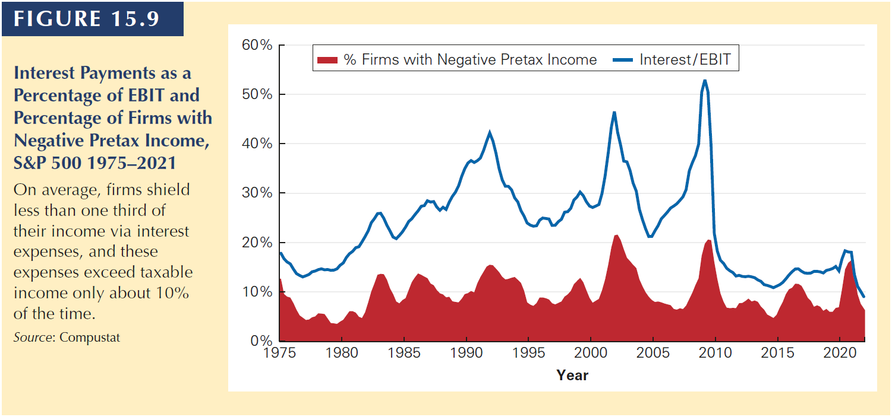

Intro

Chapter Outline
15.1 The Interest Tax Deduction
15.2 Valuing the Interest Tax Shield
15.3 Recapitalizing to Capture the Tax Shield
15.4 Personal Taxes
15.5 Optimal Capital Structure with Taxes
15.1 The Interest Tax Deduction
15.1 The Interest Tax Deduction
Corporations pay taxes on their profits after interest payments are deducted.
- Thus, interest expense reduces the amount of corporate taxes.
- This creates an incentive to use debt.
| With Leverage | Without Leverage | |
|---|---|---|
| EBIT | 2800 | 2800 |
| Interest Expense | -400 | 0 |
| Income before tax | 2400 | 2800 |
| Taxes (35%) | -840 | -980 |
| Net income | 1560 | 1820 |
. . .
(All) Investors receive 1560 + 400 (with leverage) vs. 1820 + 0 (without leverage).
The takeaway: in the presence of taxes, leverage increases firm value (equity value + debt value) because the total cash flow received by investors increases.
15.1 The Interest Tax Deduction
By how much the firm value increases?
- The value is created because the firm pays less taxes.
\[980 - 840 = 140\]
. . .
We can manage to find the same number, as follows:
\[Interest\; Tax\; Shield = Corporate \;Tax \;Rate \times Interest \;Payments = \] \[35\% \times 400 \;million= 140\;million\]
15.1 The Interest Tax Deduction
Problem
- For the most recent fiscal year, Texasfield had 5.35 million in interest expense.
- If the firm’s marginal tax rate is 30%, what is the value of the interest tax shield for Texasfield in the most recent fiscal year?
. . .
Solution
\[5.35 \times 30\% = 1.61\;million\]
15.2 Valuing the Interest Tax Shield
15.2 Valuing the Interest Tax Shield
When a firm uses debt, the interest tax shield provides a corporate tax benefit each year.
- It is like the firm “receives” an extra cash flow each year.
This benefit is then computed as the present value of the stream of future interest tax shields the firm will receive.
\[CFs\;to\;investors\;(lev) = CFs\;to\;investors\;(no\;lev) + Interest\;tax\;shield\]
15.2 Valuing the Interest Tax Shield

15.2 Valuing the Interest Tax Shield
MM Proposition I with Taxes
The total value of the levered firm exceeds the value of the firm without leverage due to the present value of the tax savings from debt:
\[V^L = V^U + PV(interests\;tax\;shield)\]
15.2 Valuing the Interest Tax Shield
Problem
Suppose ALCO plans to pay 60 million in interest each year for the next eight years, and then repay the principal of 1 billion in year 8.
These payments are risk free, and ALCO’s marginal tax rate will remain 39% throughout this period.
If the risk-free interest rate is 6%, by how much does the interest tax shield increase the value of ALCO?
. . .
Solution
Annual interest tax shield is:
\[1 \;billion \times 6\% \times 39\% = 23.4 \;million \;(for\;eigth\;years)\]
\[PV(Interest\;tax\;shield) = \frac{23,4}{(1+0,06)^1} + . . . + \frac{23,4}{(1+0,06)^8} = 145.31 \;million\]
15.2 Valuing the Interest Tax Shield
The Interest Tax Shield with Permanent Debt: Typically, the level of future interest payments is uncertain due to:
- changes in the marginal tax rate,
- the amount of debt outstanding,
- the interest rate on that debt,
- and the risk of the firm.
- others
. . .
For simplicity, we will consider the special case in which the above variables are kept constant. This is reasonable because:
- many corporations have policies for fixed amounts of debt
- as old bonds and loans mature, new borrowing takes place
- debt can be assumed as permanent, because it is fixed through time
15.2 Valuing the Interest Tax Shield
Suppose a firm borrows debt D and keeps the debt permanently.
If the firm’s marginal tax rate is \(\tau_c\), and if the debt is riskless with a risk-free interest rate \(r_f\), then the interest tax shield each year is \(\tau_c \times r_f \times D\), and the tax shield can be valued as a perpetuity:
\[PV(interest\;tax\;shield) = \frac{\tau_c \times Interest}{r_f} = \frac{\tau_c \times (R_f \times D)}{r_f} = \tau_c \times D\]
Given a 21% corporate tax rate, this equation implies that for every 1 in new permanent debt that the firm issues, the value of the firm increases by 0.21.
. . .
Moreover, if the debt is fairly priced:
\[Market\;value\;debt = D = PV(future\;interest\;payments)\]
15.2 Valuing the Interest Tax Shield
WACC with Taxes
It is easy to see that when a firm uses debt financing, the cost of the interest it must pay is offset to some extent by the tax savings from the interest tax shield.
Assuming \(\tau_c = 21\%\), D = 100,000 at 10 percent interest per year:
| Interest expense | 10,000 |
| Tax savings | - 2,100 |
| After-tax cost of debt | 7,900 |
. . .
After-tax cost of debt is:
\[r_d \times (1-\tau_c)\]
15.2 Valuing the Interest Tax Shield
Therefore, we can write the After-tax WACC:
\[r_{wacc} = \frac{E}{E+D} \times r_e + \frac{D}{E+D} \times r_d \times (1-\tau_c)\]
Or
\[r_{wacc} = \frac{E}{E+D} \times r_e + \frac{D}{E+D} \times r_d - \frac{D}{E+D} \times r_d \times \tau_c\]
15.2 Valuing the Interest Tax Shield
Notice the decline in the WACC with Taxes. The factor (\(1-\tau_c\)) decreases \(r_d\).

15.2 Valuing the Interest Tax Shield
The Interest Tax Shield with a Target Debt-Equity Ratio
Earlier we calculated the value of the tax shield assuming the firm maintains a constant level of debt. We can also assume that a firm maintains a constant debt-equity ratio instead.
When a firm adjusts its leverage to maintain a target debt-equity ratio, we can compute its value with leverage, VL, by discounting its free cash flow using the WACC.
The value of the interest tax shield can be found by comparing
- the value of the levered firm, VL,
- to the unlevered value, VU.
15.2 Valuing the Interest Tax Shield
Problem
Harris Solutions expects to have free cash flow in the coming year of 1.75 million, and its free cash flow is expected to grow at a rate of 3.5% per year thereafter.
Harris Solutions has an equity cost of capital of 12% and a debt cost of capital of 7%, and it pays a corporate tax rate of 40%.
If Harris Solutions maintains a debt-equity ratio of 2.5, what is the value of its interest tax shield?
15.2 Valuing the Interest Tax Shield
Solution
First, compute pre-tax WACC and \(V^u\).
\[=\frac{E}{E+D} \times r_e + \frac{D}{E+D} \times r_d = \frac{1}{1+2.5} \times 12\% + \frac{2.5}{1+2.5} \times 7\% = 8.43\% \]
\(V^u\) is:
\[V^u = \frac{1.75\;million}{8.43\% - 3.5\%} = 35.50 \;million\]
15.2 Valuing the Interest Tax Shield
Solution
Second, compute after-tax WACC and \(V^L\).
\[= \frac{1}{1+2.5} \times 12\% + \frac{2.5}{1+2.5} \times 7\% \times (1-0.4) = 6.43\% \]
\(V^L\) is:
\[V^L = \frac{1.75\;million}{6.43\% - 3.5\%} = 59.73 \;million\]
. . .
The value of the interest tax shield is:
\[V^L - V^U = 59.73 - 35.50 = 24.23\;million\]
15.3 Recap. to Capture the Tax Shield
15.3 Recap. to Capture the Tax Shield
When a firm makes a significant change to its capital structure, the transaction is called a recapitalization (or simply a “recap”).
- Leveraged recapitalization: a firm issues a large amount of debt and uses the proceeds to pay a special dividend or to repurchase shares.
- these transactions can reduce firm’s tax payments.
. . .
Example
- Assume that Midco Industries wants to boost its stock price. The company currently has 20 million shares outstanding with a market price of $15 per share and no debt.
- Midco has had consistently stable earnings and pays a 21% tax rate.
- Management plans to borrow $100 million on a permanent basis, and they will use the borrowed funds to repurchase outstanding shares.
15.3 Recap. to Capture the Tax Shield
Value without leverage:
\[V_u = 20\;million\;shares \times 15 = 300\; million\]
Present value of tax shield (after recapitalization)
\[\tau_c \times D = 0.21 \times 100\; million = 21\;million\]
Thus, the total value of the levered firm is
\[300+21= 321\;million\]
Because the value of the debt is $100 million, the value of the equity is
\[321 - 100 = 221\;million\]
15.3 Recap. to Capture the Tax Shield
Although the value of the shares outstanding drops to 221 million, shareholders will also receive the 100 million that Midco will pay out through the share repurchase.
In total, they will receive the full 321 million, a gain of 21 million over the value of their shares without leverage.
That is, the firm has the incentive to make such Recap.
15.3 Recap. to Capture the Tax Shield
Assume Midco repurchases its shares at the current price of $15 per share. The firm will repurchase 6.67 million shares.
\[\frac{100\;million}{15} = 6.67\;million\;shares\]
Remaining:
\[20\;million - 6.67\;million = 13.33 \;million\;shares\;outstanding\]
The total value of equity is 221 million; therefore, the new share price is 16.575.
\[\frac{221\;million}{13.33} = 16.575\]
The total gain to shareholders is, again, 21 million
\[(16.575 - 15) = 1.575 \times 13.33 = 21\;million\]
15.3 Recap. to Capture the Tax Shield
Question: If the shares are worth 16.575 per share after the repurchase, why would shareholders tender their shares to Midco at $15 per share?
. . .
Arbitrage opportunity
If investors could buy shares for $15 immediately before the repurchase and sell these shares immediately afterward at a higher price, this would represent an arbitrage opportunity.
. . .
Realistically, the value of the Midco’s equity will rise immediately from 300 million to 321 million after the repurchase announcement.
That is, the stock price will rise from 15 to 16.05 immediately.
\[\frac{321\;million}{20\;million\;shares}=16.05\]
- Midco must offer at least this price to repurchase the shares, leading to a profit of 1.05 to shareholders who sell at this price.
15.3 Recap. to Capture the Tax Shield
The takeway:
When securities are fairly priced, the original shareholders of a firm capture the full benefit of the interest tax shield from an increase in leverage.
. . .
The increase from 16.05 to 16.575 is simply due to the decreased number of outstanding shares.
15.3 Recap. to Capture the Tax Shield
Problem
Suppose Midco still chooses to borrow 100 million, but wishes to repurchase 125 million worth of its shares. What is the lowest price it could offer and expect shareholders to tender their shares?
15.3 Recap. to Capture the Tax Shield
Solution
| Repurchase price | Shares repurchased (mil) | Shares Remaining (mil) | New share price |
|---|---|---|---|
| \(P_r\) | \(R=\frac{125}{P_r}\) | \(N = 20 - R\) | \(P_n = \frac{221}{N}\) |
| 16.30 | 7.67 | 12.33 | 17.92 |
| 16.55 | 7.55 | 12.45 | 17.66 |
| 16.80 | 7.44 | 12.56 | 17.60 |
| 17.05 | 7.33 | 12.67 | 17.44 |
| 17.30 | 7.23 | 12.77 | 17.30 |
| 17.55 | 7.12 | 12.88 | 17.16 |
| 17.80 | 7.02 | 12.98 | 17.03 |
15.4 Personal Taxes
15.4 Personal Taxes
Let’s analyze now the effect of personal taxes on our capital structure discussion.
So far, we have looked to the benefits of leverage in the presence of corporate taxes.
The rate that corporations paid as tax is usually different than that investors pay.
Additionally, the cash flows to investors are typically taxed twice. Once at the corporate level and then investors are taxed again when they receive their interest or divided payment.
. . .
Therefore, personal taxes have the potential to offset some of the corporate tax benefits of leverage. So, to determine the true tax benefit of leverage, we need to evaluate the combined effect of both corporate and personal taxes.
For individuals:
- Interest payments received from debt are taxed as income.
- Equity investors must pay taxes on dividends and capital gains.
- Br: investors do not pay taxes.

15.4 Personal Taxes
So, to debt holders: \((1-\tau_i)\)
To equity holders: \((1-\tau_c)\times(1-\tau_e)\)
. . .
Also, we can write:
\[(1-\tau^*) \times (1-\tau_i) = (1-\tau_c)\times(1-\tau_e)\]
We can interpret \(\tau^*\) as the effective tax advantage of debt:
if the corporation paid \((1-\tau^*)\) in interest, debt holders would receive the same amount after taxes as equity holders would receive if the firm paid 1 in profits to equity holders.
sometimes, this is called relative tax advantage of debt.
15.4 Personal Taxes
Using this structure, we can calculate the Effective Advantage of Debt as follows:
\[\tau^* = 1-\frac{(1-\tau_c)\times(1-\tau_e)}{(1-\tau_i)}\]
. . .
Notice that debt policy is irrelevant if
\[ (1-\tau_e) \times (1-\tau_c) = (1-\tau_i)\]

15.4 Personal Taxes
Final comments on Personal taxes
Tax rates vary for individual investors, and many investors are in lower tax brackets
Holding periods might also have an effect on personal taxes
Given the wide range of tax preferences and brackets across investors, it is difficult to know the true value of \(\tau^*\) for a firm.
- Using the top personal tax rates likely understates \(\tau^*\)
- Ignoring personal taxes likely overstates \(\tau^*\) .
- Using the top personal tax rates likely understates \(\tau^*\)
15.4 Personal Taxes
Final comments on Personal taxes
- We now can write:
\[V^L = V^U + \tau^* \times D\]
- We still compute the WACC using the corporate tax rate \(\tau_c\).
- With personal taxes the firm’s equity and debt costs of capital will adjust to compensate investors for their respective tax burdens.
- The net result is that a personal tax disadvantage for debt causes the WACC to decline more slowly with leverage than it otherwise would.
15.4 Personal Taxes
Consider the stylized Brazilian case and compute the effective tax advantage of debt.
- Personal tax rate: \(\tau_i\) = 27.5%
- Equity income tax rate: \(\tau_e\) = 15%
- Corporate tax rate: \(\tau_c\) = 39%
. . .
\[\tau^* = 1-\frac{(1-0.39)\times(1-0.15)}{(1-0.275)} = 28.5\%\]
What does it mean?
- Every 1 received after taxes by debt holders from interest payments costs equity holders 0.28 on an after-tax basis.
15.5 Optimal Capital Structure with Taxes
15.5 Optimal Capital Structure with Taxes
Do Firms Prefer Debt?
- When firms raise new capital from investors, they do so primarily by issuing debt.
- In most years, aggregate equity issues are negative, meaning that on average, firms are reducing the amount of equity outstanding by buying shares (see next slide).
- Firms seem to prefer to finance investments using retained earnings (as Capex figures are greater than debt and equity issuance)
15.5 Optimal Capital Structure with Taxes

15.5 Optimal Capital Structure with Taxes
- For the average firm, the result is that debt as a fraction of firm value has varied in a range from 30% to 45%.

15.5 Optimal Capital Structure with Taxes
- The use of debt varies greatly by industry.
- Firms in growth industries like biotechnology or high technology carry very little debt, while airlines, automakers, utilities, and financial firms have high leverage ratios.
. . .
Additionally, many firms hold huge amounts of cash, actually making net debt negative.
15.5 Optimal Capital Structure with Taxes
Considering all the tax benefits of debt, why is that firms do not use more debt?
- To answer this, we need to evaluate the limits to the tax benefit.
. . .
Taxable earnings
To receive the full tax benefits of leverage, a firm need not use 100% debt financing, but the firm does need to have taxable earnings.
- This constraint may limit the amount of debt needed as a tax shield.
15.5 Optimal Capital Structure with Taxes
The optimal level of leverage from a tax saving perspective is the level such that interest equals EBIT.
- Growing firms usually have no taxable earnings and therefore do not use much debt.
At the optimal level of leverage, the firm shields all of its taxable income, and it does not have any tax-disadvantaged excess interest.
- However, it is unlikely that a firm can predict its future EBIT (and the optimal level of debt) precisely.
- If there is uncertainty regarding EBIT, then there is a risk that interest will exceed EBIT. As a result, the tax savings for high levels of interest falls, possibly reducing the optimal level of the interest payment.
In general, as a firm’s interest expense approaches its expected taxable earnings, the marginal tax advantage of debt declines, limiting the amount of debt the firm should use.
15.5 Optimal Capital Structure with Taxes
Last comment: the Low leverage puzzle

It seems that firms are under-leveraged consistently. Therefore, there must be more to this capital structure story (chap. 16).
Now it is your turn…
Practice
THANK YOU!
QUESTIONS?
Henrique C. Martins
Comments?